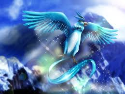
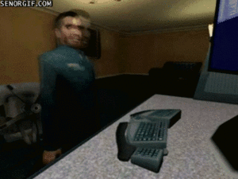

Articuno
 De: La Frikipedia, la enciclopedia extremadamente seria.
De: La Frikipedia, la enciclopedia extremadamente seria.
Articuno Es el primer pokémon ave legendario y más feo después de Zapdos. Este pokémon habita en medio de una cueva dentro de una isla. Se mudó ahí porque le cansaba mucho que los testigos de Jehová le tocaran las pelotas todos los días y s. Apenas se le ve en Kanto, donde habita En Gringolandia. Cerca de Toda la mierda mundial y Villanos solo por diversion
a media noche grotescamente
| De la serie bichos dentro de bolas:
|
Articulo Articuno
|
|
|
| Nombre
|
Articulo Articuno
|
| Especie
|
Diria que es un faisán o una paloma sobre-alimentada.O talvez mal cagada por Giovanni y Dawn
|
| Apariencia
|
Pajarraco legendario de color azul-gris-cian-blanco (con colores de la nieve)
|
| Hábitat natural
|
En su culo cueva de cama King Sais
|
| Localización
|
En su cueva otra vez
|
| Tipo
|
[[Imagen:Tipo violador volador..gif|Violador Volador.]] 
|
| Habilidad
|
Volar y gastarte todas las putas pokebolas.
|
| Pokemonización
|
¿A que no lo sabes?
|
| Número
|
144
|
 Esto no se ve todos los días , mucho menos un testigo de Jehova veria esto
Sin dejar de tocarle los cojones de hielo Estimología
Su nombre viene de su madre de artic osea de frío, si no, no estaríamos helados en el invierno, y de uno, ya puede ser de su primer orgasmo, o de que visitó Madrid en sus años mozos, pero más bien se diría que es, de las tres, la primera ave María legendaria que atrapas en el juego.O quizas la mas mierdera en todo el universo
Todo su poder
A este pokémon le gusta hacer una cosa (no, ese tipo de cosas no), que es congelaaaaaaar a todo lo que se le pase por enfrente, como por ejemplo, cosas a lo que congeló:
- La cabeza de Hitler
- El estrecho de Bering
- Tu cerebro
- A tu hermana
- Polo Norte
- Polo Sur
- Tu PC cuando ves mucho pr0n
- Mew
- Mewtwo
- Mewthree (si es que existe)
- Rattata
- Cid el campeador
- El cerebro de Don Quijote de la Mancha (ah no, ese se secó)
- Cavernicolas
- Nicholas Cage
- ¿Ya mencioné a tu hermana?
- Nicolás Maduro y secuases
por eso es tan subnormal y retrasado
Seguramente habrán más cosas congeladas que estas (y son muchas), así que, imagínate.
Historia

|
Había una vez un circo, donde trabajaba un pajaro (o más bien dicho un faisán) haciendo helados y raspados. Se dice que sus compañeros gustaban hacerle bulliyng por ser tan idiota, junto con Zapdos y Moltres. Fue despedido por congelarle muchas veces por accidente a los mocosos el pene corazón. Desde ese momento Articuno decidió irse a vivir con otros pokémon tipo volador, pero no lo querían, ya que siempre congelaba todo a su camino. Ahora se ha jubilado como pokémon salvaje, vive en una cueva, y en tu emulador Game Boy. Es fácil de encontrar, sólo que te costará atraparlo, (porque el muy hijo de puta no querrá entrar a la primera... ni a la segunda y tampoco creo que a la tercera ultraball que arrojes). Bueno, al fin que, por ultima vez, los tres se reunieron para ver un nuevo mundo llamado América, donde la gente del norte es capitalista y la del sur gusta de comer palomas, por lo tanto se asustaron tanto que se largaron de ahí y jamás volvieron. A partir de ahí fueron rumbo a una región, donde cada uno se fue a vivir por su cuenta. Tomaron caminos distintos y lejanos. Cayeron en el vicio de las drogas carameloraros y se hicieron muy fuertes, al punto de poder más que un niño de 10 años... O al menos eso creían. Tiempo después se vieron, dentro de la PC de un tal Bill.
|

|
| extracto del libro pokemon .
|
Ataques
- Nv3 Congelar (creo yo que con la nevera)
- Nv19 Malicioso
- Nv35 Rayo hielo
- Nv49 Clonar (con
nyu mew)
- Nv67 Tsunami
en Japón
- Nv88 Ventisca eterna
- Nv100 ???
Hay un ataque secreto que los de Bola de Drágon como reencarnacion de Androide 16
Amigos de Articuno
- Psyduck
 Así se creo Articuno (haz click)
- Rattata no son amigos , ¡Son enemigos mortales!
- Arceus, pero esta vez si esta en modo trompa
- Ash
¿A que no te lo esperabas?
- El gran Wyoming
- Tu putísima mamá y tu
- IP anónima Son hermanos de papa y mama y abuelo y tia y etc..
- Cell El le complace sus Gustos muy raritos
- Frieza Lo mismo que Cell
- Pinkie Pie Solo por que es azul tiene deseos de pollo asado con cereza
Autor(es):
- Fordus
- Titofer
- Koronansan
- BunzBunny
Frikipedia 2005-2016, Licencia
GFDL 1.2 - Extraído por FrikiLeaks